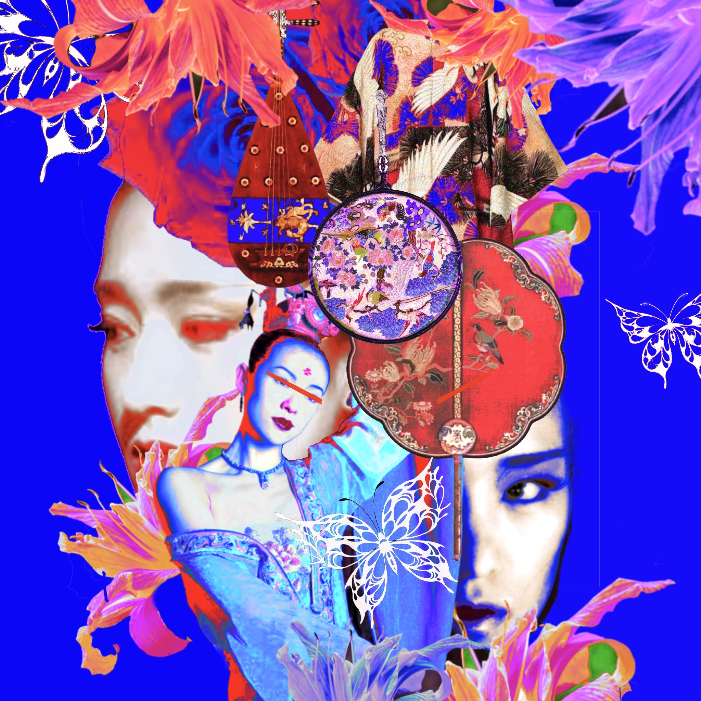
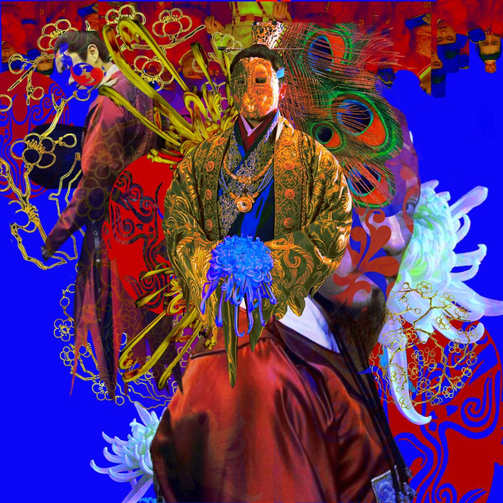
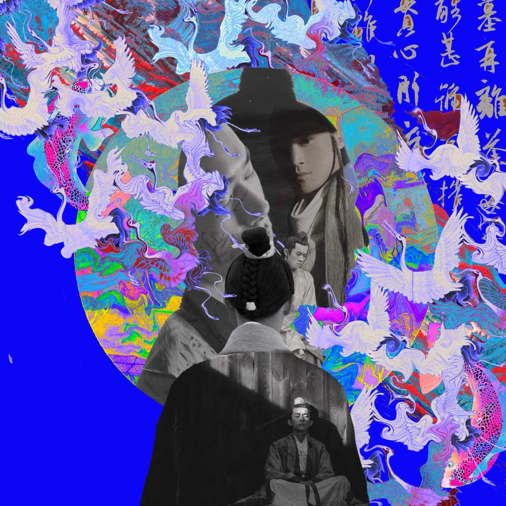
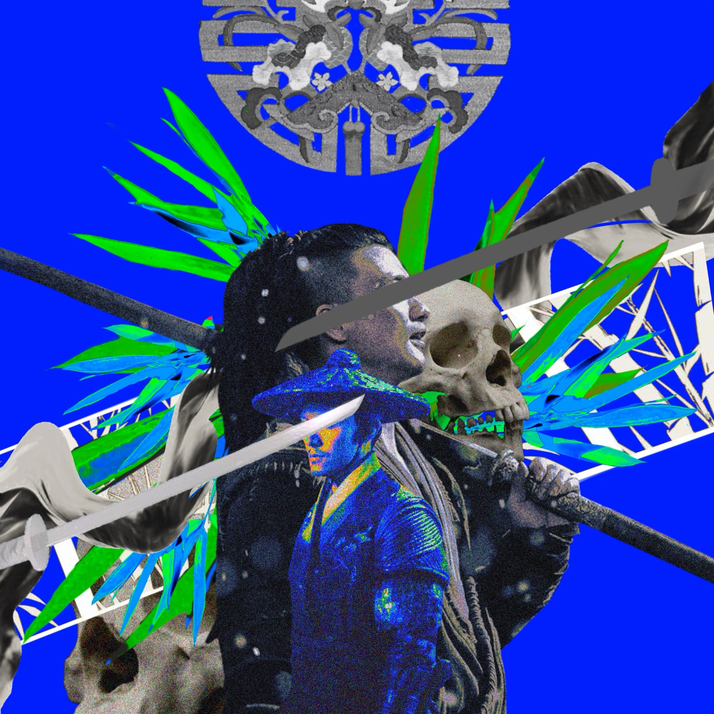

SELECTED WORKS
MY WORKS.
人物をテーマに制作したデジタルコラージュです。歌姫、商人、画家、武士という四つの人物像を、色彩とさまざまな素材の組み合わせで表現しました。

01 / 歌姫

02 / 商人

03 / 画家

04 / 武士
人物をテーマに制作したデジタルコラージュです。歌姫、商人、画家、武士という四つの人物像を、色彩とさまざまな素材の組み合わせで表現しました。

01 / 歌姫

02 / 商人

03 / 画家

04 / 武士